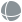
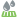
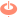
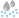
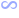
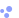
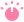
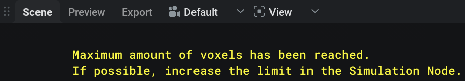
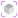

节点列表#
Shape: Primitive #
{kind=link}
此节点表示一个形状图元。
Shape Activity： 如果设为 false，该形状会被忽略。
- Type： 此形状使用的图元类型：
- Sphere

只能进行均匀缩放的球形。 Radius： 该 Sphere 形状的半径，单位为米。值越高，球体越大。
- Sphere
- Box
 可沿三个轴缩放的立方体：
可沿三个轴缩放的立方体： Size： 该 Box 形状的尺寸，单位为米。
- Box
- Capsule
 上下为球形端部的圆柱状形状：
上下为球形端部的圆柱状形状： Length： 该 Capsule 形状的长度，单位为米。
Radius： 该 Capsule 形状的半径或厚度。
- Capsule
- Cylinder
 圆柱条形：
圆柱条形： Radius： 该 Cylinder 形状的半径或厚度。
Height： 该 Cylinder 形状的高度或长度。
- Cylinder
- Cone
 顶部和底部半径可调的圆柱：
顶部和底部半径可调的圆柱： Radius One： 该 Cone 形状第一个端盖（底部）的半径。
Radius Two： 该 Cone 形状第二个端盖（顶部）的半径。
Height： 该 Cone 形状的高度。
- Cone
Position： 形状的局部位置。
Rotation： 形状的旋转角度，单位为度。
{kind=link}
{kind=link}
{kind=link}
外观#
{kind=link}
用于控制另一个元素的外观，例如发射器、碰撞体或液体本身。
Appearance Preset： 将外观参数设置为类似特定材质。之后更改任意参数会把预设设为 custom。
Diffuse color： 设置材质的基础颜色。
- Refractive： 如果勾选，光线可以穿过材质，使其呈透明效果。这也会显示 IOR 参数。
IOR： 材质的折射率，决定光线穿过材质时弯折的角度。例如，水的折射率为 1.33，玻璃约为 1.5。
Transmission color： 透射光的颜色。
Absorption strength： 定义光线穿过材质时被着色的程度（基于 Transmission color）。值越高吸收的光越多，值越低材质越透明。
Reflectivity： 材质的 Fresnel 反射率，定义在法线入射角/从正面观察表面时（正视，F0）。一些示例：塑料 0.04，水 0.02，宝石 0.05 - 0.16，皮肤 0.028…
Reflective color： 反射光的着色。所有电介质通常是无色（白色）的，而导体可以有颜色。只有色相和饱和度会产生影响。
Rim reflective color： 此参数控制相对于摄像机 90 度表面角处反射光的颜色（位于表面边缘）。物理准确的材质通常在此角度显示白色反射，但可以调整此设置来获得风格化效果，让边缘反射带有颜色。
Roughness： 值越低材质越平滑且反射越强，值越高材质越粗糙且漫反射越明显。
Emission intensity： 材质发出的光量。
Emission color： 发射光的颜色。
 Collider#
Collider#
与形状和导入节点配合使用，用于在场景中放置液体可以碰撞的对象。
形状或导入模型可以连接到 Shapes 引脚，以设为液体模拟的碰撞对象。
要让碰撞体成为场景的一部分，应将 Collider 节点的输出引脚  Collider 连接到 Colliders 输入引脚，该输入位于
Collider 连接到 Colliders 输入引脚，该输入位于  Simulation 节点。
Simulation 节点。
General#
Collider activity： 碰撞体活动状态。关闭时，碰撞体不会碰撞，也不会注入速度。
Invert shape： 勾选后，形状外部会被视为内部，反之亦然。
Show： 此对象是否可见。
Appearance#
此选项卡中的参数控制连接到 Shapes 引脚的形状的视觉外观，该引脚属于  Collider 节点。
Collider 节点。
这些参数与此处记录的 Appearance 节点中的参数完全相同！ 此处！

Drain#
{kind=link}
与形状和导入节点配合使用，用于在场景中放置排水对象，液体接触后会被移除。
要让排水体成为场景的一部分，应将 Drain 节点的输出引脚 Drain 连接到 Drains 输入引脚，该输入位于  Simulation 节点。
Simulation 节点。
Activity#
Drain activity： 排水体活动状态；如果设为 false，排水体会被忽略。
Invert shape： 勾选后，形状外部会被视为内部，反之亦然。
Show： 此对象是否可见。
 Emitter#
Emitter#
与形状和导入节点配合使用，用于在场景中放置会发射液体的对象。
要让发射器成为场景的一部分，应将 Emitter 节点的输出引脚  Emitter 连接到 Emitters 输入引脚，该输入位于
Emitter 连接到 Emitters 输入引脚，该输入位于  Simulation 节点。
Simulation 节点。
Activity#
Emitter activity： 发射器活动状态；如果设为 false，发射器会被忽略。
Show： 此对象是否可见。
Behavior#
- Emission Location： 决定从哪里发射。
Volume： 可从整个体积发射。
Surface： 只在靠近表面处发射。
- Emission Mode： 决定何时发射。
Fill： 创建新的液体来填充发射器内的空隙（通常是之前发射出的液体移走后留下的空隙）。这通常更适合生成层流。
- Continuous Generation： 无论如何都会按用户定义的速率创建新液体。这通常更适合生成湍流。
Volume flow rate density： 每单位体积应生成多少液体体积。
Just once： 如果勾选，发射器只会在单个模拟步中发射一次，随后停止；适合创建初始液体体。
Reset previous liquid： 如果勾选，发射器内所有液体（无论新旧）的速度都会被设为发射器速度。例如，这对水下填充发射器很有用。
Lifetime range： 设置已发射粒子的最小和最大寿命。请注意，需要在
 Simulation 节点中启用粒子寿命，此参数才会生效。
Simulation 节点中启用粒子寿命，此参数才会生效。Dynamic viscosity coefficient（动态黏度系数）： 决定液体的黏稠程度。更严格地说，它是液体对剪切流动的阻力。Density 会影响其效果强度，因此在匹配真实液体数据时，也应尝试匹配 Density（位于 Density 选项卡中，属于
Simulation 节点）。还要注意，黏度效果通常在小尺度下更明显。查找资料时请注意，动态黏度系数和运动黏度系数相关但并不相同。另外，需要在 Viscosity 选项卡中启用黏度，该选项卡属于 Simulation 节点，此参数才会生效。建议：模拟高黏度液体时，让液体变得更粘（使用下面的参数）会有帮助。你可能还需要降低 Solver 选项卡中的 PIC/FLIP ratio，该选项卡属于 Simulation 节点。
Stickiness： 液体黏附到碰撞体上的程度。对于黏性液体，大多数情况下将此值设为 100% 更符合物理。
Velocity#
Speed： 已发射液体的初始速度（如果启用 Reset previous liquid，通常也包括发射器内已有液体的初始速度）。
- Direction： 决定如何指定速度方向。
- Fixed： 已发射液体具有固定的初始方向。
Fixed direction： 初始液体速度的方向。向量长度会被忽略，请使用 Speed 参数指定液体移动速度。
- Towards Target： 已发射液体会朝向目标。
Target Position： 初始液体速度的目标位置。
Velocity transfer： 发射器在模拟中的速度传递百分比。
 力#
力#
 Force: Constant#
Force: Constant#
对场景中的液体施加恒定力。默认情况下，该力会全局应用，但也可以用形状进行遮罩，使其只应用到特定区域。
Activity#
Force Active： 力的活动状态；如果设为 false，该力会被忽略。
Show Force Masks： 如果勾选，连接到 Mask Shapes 引脚的形状会在视口中可见，用于显示力被遮罩的位置。
Behavior#
Apply force： 按轴向粒子施加恒定加速度。
Mask#
可以使用接入 Mask Shapes 输入引脚的形状来遮罩力。此遮罩效果可以用本选项卡中的参数调整。
- Mask Falloff： 遮罩衰减类型。
None： 不应用遮罩衰减，遮罩会直接表示所连接的遮罩形状。
Linear 力会在指定的遮罩衰减距离内，使用线性插值从遮罩形状内部的全强度逐渐减弱到遮罩形状外部的完全关闭。此插值适合获得最可预测的结果。
Quadratic： 力会在指定的遮罩衰减距离内，使用二次插值从遮罩形状内部的全强度逐渐减弱到遮罩形状外部的完全关闭。此插值适合在遮罩形状边界获得更平滑的过渡。
Cubic： 力会在指定的遮罩衰减距离内，使用三次插值从遮罩形状内部的全强度逐渐减弱到遮罩形状外部的完全关闭。此插值通常适合获得更平滑的过渡。
- Custom： 力会在指定的遮罩衰减距离内，使用基于 Mask falloff exponent 参数的自定义插值，从遮罩形状内部的全强度逐渐减弱到遮罩形状外部的完全关闭。此插值适合强制产生特定行为，尤其是在衰减距离中段。
Mask falloff exponent： 衰减因子；0 会导致没有衰减。可以把它理解为从施力到关闭力之间渐变的 gamma 值。
Mask falloff distance： 应用衰减的最大距离，从遮罩表面开始向外延伸到此值；遮罩内部不会应用衰减。
该 Mask falloff distance 参数在 Mask Falloff 设置为 None 时不会显示!
Mask dilation： 扩张输入遮罩形状，同时保留其原始状态；类似于缩放图元，但不会改变图元本身。
 Force: Shape#
Force: Shape#
基于形状或导入网格的表面或体积生成的力场。
Activity#
Force Active： 力的活动状态；如果设为 false，该力会被忽略。
Show Force Masks： 如果勾选，连接到 Mask Shapes 引脚的形状会在视口中可见，用于显示力被遮罩的位置。
Show： 力形状对象是否可见。
Behavior#
- Matching Inside/Outside values： 如果启用，应用到形状外部的值会镜像形状内部的值。如果未勾选，则会显示以下参数：
Inside Constant force dampening： 补偿形状内部的恒定力；0 表示不补偿，1 表示完全补偿（恒定力没有效果）。
Inside Attract Strength： 形状内部的力强度。正值会向表面拉拽，负值会从表面推开。
Inside Falloff： 基于到表面距离的衰减效果；0 表示无衰减（恒定力）。
Outside Constant force dampening： 补偿形状外部的恒定力；0 表示不补偿，1 表示完全补偿（恒定力没有效果）。
Outside Attract Strength： 形状外部的力强度。正值会向表面拉拽，负值会从表面推开。
Outside Falloff： 基于到表面距离的衰减效果；0 表示无衰减（恒定力）。
Constant force dampening： 补偿此力应用位置处的恒定力；0 表示不补偿，1 表示完全补偿（恒定力没有效果）。
Attract Strength： 朝向形状的力强度。正值会向表面拉拽，负值会从表面推开。
Falloff： 基于到表面距离的衰减效果；0 表示没有衰减，力会在模拟中全局应用。
Shape dilation： 扩张输入形状，同时保留其原始状态；等同于缩放图元/网格，但不会改变它本身。
Mask#
可以使用接入 Mask Shapes 输入引脚的形状来遮罩力。此遮罩效果可使用本选项卡中的参数调整，这些参数与此处记录的  Force: Constant 节点中的参数相同，文档见 此处！
Force: Constant 节点中的参数相同，文档见 此处！
 Force: Drag#
Force: Drag#
创建一个与流体当前速度相反的力，用于阻尼其运动。
Activity#
Force Active： 力的活动状态；如果设为 false，该力会被忽略。
Show Force Masks： 如果勾选，连接到 Mask Shapes 引脚的形状会在视口中可见，用于显示力被遮罩的位置。
Behavior#
Strength： 力强度，即最终阻力的线性乘数。值越高，液体减速越快。
Power： 对于阻力，移动更快的粒子会比移动更慢的粒子受到更强的减速。此指数控制这种效果。较小的指数会让效果不那么明显，较大的指数会让效果更明显。物理上正确的值为 2。
Mask#
可以使用接入 Mask Shapes 输入引脚的形状来遮罩力。此遮罩效果可使用本选项卡中的参数调整，这些参数与此处记录的  Force: Constant 节点中的参数相同，文档见 此处！
Force: Constant 节点中的参数相同，文档见 此处！
 Force: Turbulence#
Force: Turbulence#
向模拟中注入噪声。
Activity#
Force Active： 力的活动状态；如果设为 false，该力会被忽略。
Show Force Masks： 如果勾选，连接到 Mask Shapes 引脚的形状会在视口中可见，用于显示力被遮罩的位置。
Behavior#
Scale： 噪声力的相对尺度。值越高，噪声频率越低，会在受影响液体中产生更大的变形。例如，可用于创建更大的波浪。值越低，噪声频率越高，会产生更小的变形。例如，可用于向液体添加更多细节。
Seed： 生成噪声的种子。不同种子会生成独特的随机噪声图案。
Octaves： 要组合的噪声图案（octaves）数量。值越高会为噪声添加更多细节，但计算成本也更高。
Lacunarity： Lacunarity 决定每个 octave 的尺度如何变化。噪声频率会乘以此值。
Gain： Gain（增益）决定每个 octave（倍频层）的振幅如何变化。大于 1.0 的 gain（增益）会放大每个 octave（倍频层）的噪声，小于 1.0 的值会衰减它。
Strength： 噪声力强度。值越高，湍流量越大。
Animation Speed： 噪声的动画速度。0 表示静态噪声。值越高，噪声图案随时间变化越快。
Bias： Bias 会让噪声更倾向于指向特定方向。给定向量同时决定方向以及朝该方向偏置的程度。值越接近零，噪声越随机。
Rotation： 噪声力的相对方向。更改旋转会整体旋转整个噪声图案。
Mask#
可以使用接入 Mask Shapes 输入引脚的形状来遮罩力。此遮罩效果可使用本选项卡中的参数调整，这些参数与此处记录的  Force: Constant 节点中的参数相同，文档见 此处！
Force: Constant 节点中的参数相同，文档见 此处！
Force: Line#
{kind=link}
围绕一条线生成力，可用于向模拟和粒子注入自定义速度。这适合创建龙卷风、推力、风切变、旋转传送门以及各种其他现象。
Activity#
Force Active： 力的活动状态；如果设为 false，该力会被忽略。
Show Force Masks： 如果勾选，连接到 Mask Shapes 引脚的形状会在视口中可见，用于显示力被遮罩的位置。
Behavior#
Position： 线力在世界空间中的位置。
Rotation： 力在世界空间中的朝向和方向，按每个旋转轴以度为单位。
Push Strength： 沿线方向推动的强度。负值会反转方向。
Twist Strength： 绕线扭转的强度。正值会逆时针扭转，负值会顺时针扭转。
Repel Strength： 从线向外排斥或向线吸引的强度。正值会从线向外推开，负值会向线拉近。
- Falloff： 衰减类型。
None： 不应用衰减。线力会同等影响整个模拟。
Linear 力会在指定的衰减半径内，使用线性插值从线处的全强度逐渐减弱到远离线处的完全关闭。此插值适合获得最可预测的结果。
Quadratic： 力会在指定的衰减半径内，使用二次插值从线处的全强度逐渐减弱到远离线处的完全关闭。此插值适合在衰减起点和终点获得更平滑的过渡。
Cubic： 力会在指定的衰减半径内，使用三次插值从线处的全强度逐渐减弱到远离线处的完全关闭。此插值通常适合获得更平滑的过渡。
- Custom： 力会在指定的衰减半径内，使用基于 Falloff exponent 参数的自定义插值，从线处的全强度逐渐减弱到远离线处的完全关闭。此插值适合强制产生特定行为，尤其是在衰减距离中段。
Falloff exponent： 衰减因子；0 会导致没有衰减。可以把它理解为从施力到关闭力之间渐变的 gamma 值。
以下参数只会在 Falloff 未设置为 None!

- Use line segment： 如果勾选，力会限制到一段线段，而不是无限长的线。
Line segment length： 线段长度。
Inverse falloff： 如果勾选，衰减会反转：力在衰减半径外最强，然后越接近线越减弱。默认情况下，力在线附近最强，并会减弱到衰减半径。
Falloff percent： 衰减范围外要移除的力的比例。
Falloff radius： 力衰减半径，单位为米。如果存在衰减内部边界，衰减半径会从内部边界半径处开始。
Falloff inner bound： 距离线的半径，单位为米；在此半径内力最强且没有衰减。也可以理解为从线开始计算的衰减起点半径。
Mask#
可以使用接入 Mask Shapes 输入引脚的形状来遮罩力。此遮罩效果可使用本选项卡中的参数调整，这些参数与此处记录的  Force: Constant 节点中的参数相同，文档见 此处！
Force: Constant 节点中的参数相同，文档见 此处！

Force: Toroidal#
{kind=link}
用于向模拟和粒子注入自定义速度。它模拟类似磁场。
Activity#
Force Active： 力的活动状态；如果设为 false，该力会被忽略。
Show Force Masks： 如果勾选，连接到 Mask Shapes 引脚的形状会在视口中可见，用于显示力被遮罩的位置。
Behavior#
Position： 环形力在世界空间中的位置。
Rotation： 力在世界空间中的朝向和方向，按每个旋转轴以度为单位。
Push Strength： 沿环面形状的圆穿过并环绕推动的强度。负值会反转方向。
Twist Strength： 沿虚线环面圆扭转的强度。正值会逆时针扭转，负值会顺时针扭转。
Repel Strength： 从虚线环面圆向外排斥或向其吸引的强度。正值会从圆向外推开，负值会向圆拉近。
Radius： 环面的半径。
- Falloff： 衰减类型。
None： 不应用衰减。环形力会同等影响整个模拟。
Linear 力会在指定的衰减半径内，使用线性插值从虚线环面圆处的全强度逐渐减弱到远离该圆处的完全关闭。此插值适合获得最可预测的结果。
Quadratic： 力会在指定的衰减半径内，使用二次插值从虚线环面圆处的全强度逐渐减弱到远离该圆处的完全关闭。此插值适合在衰减起点和终点获得更平滑的过渡。
Cubic： 力会在指定的衰减半径内，使用三次插值从虚线环面圆处的全强度逐渐减弱到远离该圆处的完全关闭。此插值通常适合获得更平滑的过渡。
- Custom： 力会在指定的衰减半径内，使用基于 Falloff exponent 参数的自定义插值，从虚线环面圆处的全强度逐渐减弱到远离该圆处的完全关闭。此插值适合强制产生特定行为，尤其是在衰减距离中段。
Falloff exponent： 衰减因子；0 会导致没有衰减。可以把它理解为从施力到关闭力之间渐变的 gamma 值。
以下参数只会在 Falloff 未设置为 None!

Inverse falloff： 如果勾选，衰减会反转：力在衰减半径外最强，然后越接近虚线环面圆越减弱。默认情况下，力在虚线环面圆附近最强，并会减弱到衰减半径。
Falloff percent： 衰减范围外要移除的力的比例。
Falloff radius： 力衰减半径，单位为米。如果存在衰减内部边界，衰减半径会从内部边界半径处开始。
Falloff inner bound： 距离虚线环面圆的半径，单位为米；在此半径内力最强且没有衰减。也可以理解为从虚线环面圆开始计算的衰减起点半径。
Mask#
可以使用接入 Mask Shapes 输入引脚的形状来遮罩力。此遮罩效果可使用本选项卡中的参数调整，这些参数与此处记录的  Force: Constant 节点中的参数相同，文档见 此处！
Force: Constant 节点中的参数相同，文档见 此处！
 Light#
Light#
 Light: Directional#
Light: Directional#
模拟太阳的方向光。此节点通常作为  Skybox 节点的输入使用。
Skybox 节点的输入使用。
Active： 如果设为 false，该光源会被忽略。
- Direction definition： 决定方向的方式。
- Angles： 使用方位角（旋转）和仰角确定光照方向。
Azimuth： 方向光的旋转。
Elevation： 方向光的仰角。
- Positions： 使用源位置和目标位置确定光照方向。
Source position： 光源在世界空间中的位置。
Target position： 光源目标在世界空间中的位置。方向光会指向此目标位置。
Light intensity： 光的强度。
Light color： 光源发出的颜色。
Angular size： 光源的角大小。它控制光源的表观尺寸。值越大，阴影越柔和。
 Light: Point#
Light: Point#
向所有方向均匀发光的光源。
Active： 如果设为 false，该光源会被忽略。
Light intensity： 光的强度。
Light color： 光源发出的颜色。
Position： 光在世界空间中的位置。
Light radius： 点光源的尺寸。可以把它理解为灯泡半径。值越高，光源越大，会产生更柔和的阴影和更大的高光。
 Light: Area#
Light: Area#
从矩形平面的一面或两面发光的光源。
Active： 如果设为 false，该光源会被忽略。
Light intensity： 光的强度。
Light color： 光源发出的颜色。
Position： 光在世界空间中的位置。
Rotation： 面光源的旋转。
Dimension： 面光源的高度和宽度。较大的光源会带来更柔和的外观和更大的高光；较小的光源会带来更高对比度和更小高光。
Double sided： 如果勾选，面光源背面也会发光。
 Whitewater（白水）#
Whitewater（白水）#
 Whitewater（白水）#
Whitewater（白水）#
辅助创建并决定场景中白水的行为。要生成白水，需要将此节点连接到 Whitewater 引脚，该引脚位于  Simulation 节点上，白水效果才会存在。
Simulation 节点上，白水效果才会存在。
Activity#
Whitewater activity（白水活动）： 如果勾选，白水系统处于活动状态。如果未勾选，则不会生成白水粒子。
Show： 白水是否可见。
Simulation#
Simulate spray： 切换是否模拟飞溅，或立即清除飞溅粒子。
Simulate foam： 切换是否模拟泡沫，或立即清除泡沫粒子。
Simulate bubbles： 切换是否模拟气泡，或立即清除气泡粒子。
Source#
Trapped air: Range： 决定因 trapped air（滞留空气）而发射粒子的位置范围。滞留空气以黄色表示，非滞留空气会从青色过渡到紫色。
Trapped air: Max Depth： 空气可被滞留的最大深度（生成气泡）。
Wave crest: Range： 决定何时在波峰上发射粒子的数值范围。波峰以黄色表示。
Trapped air: Emission rate： 因滞留空气而发射的每体素每秒粒子数。
Wave crest: Emission rate： 在波峰上发射的每体素每秒粒子数。
Initial HP： 分配给粒子的生命值范围。不同白水粒子类型（飞溅、泡沫或气泡）会以不同速率消耗生命值。当所有生命值被消耗后，白水粒子会死亡。生命值消耗速率由 Dynamics 选项卡中的 decay 参数指定。
Foam: initial spread（泡沫初始扩散）： 决定泡沫初始方向的随机程度。如果白水跳出水面超过预期，请降低此值。
Bubbles: initial spread（气泡初始扩散）： 决定气泡初始方向的随机程度。
Dynamics#
Surface offset： 值越高，泡沫会离液体表面越远。值越低，泡沫会更深入液体表面。
Apply liquid drains： 除了此节点上 pin 连接的自定义排水体外，还将流体常规模拟中应用的相同排水体应用到白水。
Spray: Apply liquid forces（飞溅：应用液体力）： 除了此节点上 pin 连接的自定义力外，还将流体常规模拟中应用的相同力应用到白水。
Spray: Buoyancy（飞溅：浮力）： 由于飞溅浸没在空气中而施加到飞溅上的加速度。可用于让飞溅停留更久，或以较低成本模拟风对飞溅的影响。
Spray: Decay： 飞溅每秒失去的生命值。粒子生命值归零后会从模拟中移除。
Foam: Decay： 泡沫每秒失去的生命值。粒子生命值归零后会从模拟中移除。
Foam: Drag： 泡沫因阻力损失的速度量。
Bubbles: Decay： 气泡每秒失去的生命值。粒子生命值归零后会从模拟中移除。
Bubbles: Buoyancy（气泡：浮力）： 由于气泡浸没在液体中而施加到气泡上的加速度。
Bubbles: Drag： 气泡因阻力损失的速度量。
Bubbles to foam rate（气泡转泡沫速率）： 转变为泡沫而不是消失的气泡数量。
Appearance#
Spray: Radius： 每个飞溅粒子的半径。
Spray: Opacity： 每个飞溅粒子的透明度。
Foam: Radius： 每个泡沫粒子的半径。
Foam: Opacity： 每个泡沫粒子的透明度。
Bubbles: Radius： 每个气泡粒子的半径。
Bubbles: Opacity： 每个气泡粒子的透明度。

Whitewater Source（白水源）#
{kind=link}
与  Whitewater 节点配合使用：将此节点接入该节点的 Sources 输入引脚，用于定义场景中生成白水粒子的区域。白水粒子不会在这些区域之外生成。
Whitewater 节点配合使用：将此节点接入该节点的 Sources 输入引脚，用于定义场景中生成白水粒子的区域。白水粒子不会在这些区域之外生成。
Activity#
Whitewater activity（白水活动）： 白水活动状态；如果设为 false，则不会生成白水粒子。
Invert shape： 勾选后，形状外部会被视为内部，内部会被视为外部。
Show： 形状遮罩是否可见。
Source#
Trapped air: Range： 决定何时因受困空气而发射粒子的数值范围。
Trapped air: Max Depth： 空气可被困住的最大深度（生成气泡）。
Wave crest: Range： 决定何时在波峰上发射粒子的数值范围。
Trapped air: Emission rate： 因受困空气而发射的每体素每秒粒子数。
Wave crest: Emission rate： 在波峰上发射的每体素每秒粒子数。
Initial HP： 分配给粒子的生命值范围。不同白水粒子类型（飞溅、泡沫或气泡）会以不同速率消耗生命值。当所有生命值被消耗后，白水粒子会死亡。生命值消耗速率由 Whitewater（白水）节点 Dynamics（动力学）选项卡中的 decay（衰减）参数指定。
Foam: initial spread（泡沫初始扩散）： 决定泡沫初始方向的随机程度。如果白水粒子跳出表面的程度超过预期，请降低此值。
Bubbles: initial spread（气泡初始扩散）： 决定气泡初始方向的随机程度。
Mask#
Shapes offset： 这会偏移已链接形状的表面。这样无需修改形状本身，就可以放大或缩小发射器。
Falloff distance： 设置向内的衰减距离。发射强度会从边界处的 0% 逐渐上升到指定距离处的 100%，从而形成渐变效果。
摄像机  #
#
与 3D 摄像机相关的节点集合。
摄像机 #
这是你在渲染或查看效果时所通过的摄像机视角。
你可以在视口顶部的 Camera 下拉菜单中选择摄像机。
General#
- Activate / Copy
Activate： 此按钮会在视口中使用所选摄像机。
Copy From Active： 此按钮会把你当前正在查看的摄像机设置复制到所选摄像机。当你用默认摄像机取景完成后，想快速把该朝向转移到渲染摄像机时，这会很有用。
Lock： 当你对摄像机位置满意后，可以锁定该摄像机，这样就不会意外移动它。
Transform#
Position： 摄像机在 3D 空间中的位置。
Yaw Angle： 偏航角，单位为度。用于将视角向左或向右移动。
Pitch Angle： 将视角向上或向下移动。
Roll Angle： 滚转角，单位为度。用于旋转视角。
Near clipping plane： 物体要被渲染时，必须距离摄像机达到的最小距离。
Far clipping plane： 物体能够被渲染时，允许距离摄像机的最大距离。
Display#
- Projection： 选择摄像机的投影模式。
- Perspective： 真实且最常用的投影方式，类似真实摄像机拍摄的图像。远处物体会显得更小，平行线会指向消失点。
- Lens parameter： 用于放大或缩小画面的方式。
- Focal Length： 通过像真实摄像机一样使用焦距和传感器宽度来模拟摄像机变焦。
Sensor width： 摄像机传感器的宽度。
Focal length： 从镜头中心到焦点的距离。值越高，画面越放大；值越低，画面越缩小。
- FOV： 使用视野参数模拟摄像机变焦。
Field of view： 焦点与传感器之间的垂直角度。值越高，画面越缩小；值越低，画面越放大。
- Orthographic 没有消失点且距离不会影响大小的投影方式。它类似技术插图，或使用无限大的焦距。所有内容都会被压平，形成风格化外观。此模式可用于渲染将放置在平面上的远距离元素。
Orthographic width： 此参数决定正交平面的大小，类似在图像上进行 2D 放大或缩小。值越高，可显示的场景范围越大。也可以在视口中使用摄像机导航控件放大或缩小来改变此值。
Display Resolution： 渲染选项卡预览中使用的分辨率。它也会决定宽高比。紧挨着 W 和 H（宽度和高度）字段的是一个下拉菜单，可在其中选择 720p、1080p 或 4k 的分辨率预设。你也可以在 W 和 H 字段中输入所需的像素分辨率，然后点击
 图标来添加自己的预设。
图标来添加自己的预设。
Preview#
此选项卡中的参数只会应用于 Preview 选项卡中显示的图像！
这些参数对应 Preview 选项卡顶部的参数。
Preview scale to fit 如果勾选，显示图像会在保持宽高比不变的同时缩放到填满整个视口窗口。
Display scale 仅当 Preview scale to fit 未勾选时有效！此参数会放大或缩小显示图像。
Backplate#
- Use backplate： 通过摄像机查看时，使用背景板作为视口背景。
Import Backplate： 背景板或背景板序列中第一张图像的文件路径和名称。
- Animated backplate： 如果勾选，LiquiGen 会查找可用作背景板片段的图像序列。
Backplate frame rate： 背景板播放时使用的帧率。如果你的序列应以每秒 30 帧播放，应将此值设为 30，这表示图像序列的下一帧会在 LiquiGen 中每隔一帧播放一次（因为 LiquiGen 以 60 fps 运行）。
First frame： 图像序列的起始帧。你可以使用正值让图像序列在模拟中稍后开始，也可以使用负值裁掉图像序列开头的一部分。请注意，此值相对于 Backplate frame rate，因此图像序列开始播放的模拟/时间轴帧为（60 / Backplate frame rate x First frame)
sRGB： 如果勾选，会假定背景板以 sRGB 色彩空间编码。
Camera: Look At #
此节点为摄像机提供 look-at 位置。将此节点连接到摄像机的 Control 引脚后，摄像机会始终看向指定的焦点位置。
当把 Camera: Look At 节点连接到 Camera 节点时，摄像机的 Position、Yaw angle、Pitch angle 和 Field of view 参数会由 Camera: Look At 节点控制。
Focus Position： 摄像机要朝向的 3D 空间位置。
Field of view： 已连接 Camera 节点的视野参数。
- Coordinate Space：
- Fixed Position： 允许相对于焦点位置更改摄像机的位置。
Camera Position： 摄像机的位置。使用此参数后，摄像机仍会始终朝向焦点位置。
- Fixed Orientation： 允许相对于 look-at 更改摄像机方向，并显示 Camera Radius、Yaw Angle 和 Pitch Angle 参数。
Camera Radius： 摄像机与焦点位置之间的距离。
Yaw Angle： 可用于围绕焦点移动。将此参数连接到低频率 cycle 节点，可以创建漂亮的转台动画。
Pitch Angle： 从更高或更低的角度朝向焦点进行上下定向。
 导入#
导入#
用于将静态网格和动画网格导入场景；这些网格可与发射器、碰撞体以及任何支持遮罩的节点一起使用。
更多信息请阅读我们的 FBX、OBJ、ABC 导入 页面！
请注意，导入的模型应适合模拟。这意味着几何体应当闭合。另外，任何薄于体素尺寸的部分，其几何体都无法被正确处理以用于模拟。
Asset#
- Voxel Sizing： 设置导入网格的体素大小定义方式。
- Relative： 将导入网格的体素分辨率定义为模拟分辨率的一部分。
Relative Resolution： 定义导入网格相对于 Simulation（模拟）节点中体素大小设置的体素分辨率缩放。100% 表示导入网格的体素密度与模拟相同。200% 表示相对于底层模拟分辨率提升 2 倍。较高值可在高细节模型上得到更好结果，较低值可缩短模拟时间。要查看此参数对 SDF 的影响，请前往诊断面板中的模型 部分。
- Absolute 根据输入的体素大小定义导入网格的体素分辨率。
Voxel Size： 定义导入网格体素的大小。较小值会捕捉网格的更精细细节，但也会增加内存和计算成本。要查看此参数对 SDF 的影响，请前往诊断面板中的模型 部分。
Animations#
- Animate： 如果勾选，且模型包含动画，则会播放该动画。
Animations： 如果有多个动画层，可在这里选择所需的动画层。
Transform#
Pivot： 缩放前应用到导入内容位置上的偏移。
Master scale： 大尺度乘数，用于轻松将非常大或非常小的场景缩放到合适大小。
Scale： 常规缩放选项，用于微调导入资产的大小。
Position： 应用于导入资产位置的偏移。
Rotation： 应用于导入资产旋转的偏移。
Auto pivot： 自动设置枢轴 参数，使枢轴点位于导入网格形状的中心。
Playback#
Loop animation： 如果开启，动画会无限循环播放。
- Override FPS： 如果为 true，你可以定义每秒帧数。如果将此值设为 Timestep（默认为 60），导出结果应能在目标应用中对齐。也可以将 FPS 设为 30，并将 Timestep 保持为 60；但这样就需要把导出帧步长设为 2，才能在目标应用中对齐。
FPS： 用于替换导入器读取到的每秒帧数。
Frame delay： 动画延迟的帧数。负值会提前播放动画。
Duration offset： 用于修改动画时长的帧数。通过裁剪动画末尾，它可用于获得完美循环的动画。
Mask#
使用遮罩可以将导入内容的特定部分输出到 Mask 输出引脚。
- Mode： 定义导入内容的遮罩方式：
Meshes：这会提供一个清单，列出导入 3D 场景中的所有独立对象。勾选对象的复选框即可将其添加到遮罩。
Bones：这会提供一个清单，列出 3D 场景中的所有骨骼关节（如果有）。勾选某个关节后，与其关联的顶点会被添加到遮罩。
 导出#
导出#
 Export: Image（导出图像）#
Export: Image（导出图像）#
用于将场景的不同渲染通道导出为图像文件，可以是单张图像、图像序列或翻页序列。
Camera#
在此选项卡中，可以选择用于渲染的摄像机。请注意，  Camera 节点必须接入
Camera 节点必须接入  Scene，摄像机才会显示在此列表中。
Scene，摄像机才会显示在此列表中。
点击 Activate 按钮会将视口视角设置为所选摄像机，以便快速查看即将导出的摄像机。
Render Passes（渲染通道）#
渲染通道（也称为 AOV 或捕获类型）包含场景的特定信息。在合成软件或游戏引擎中使用效果时，这些信息非常有用。
有关如何使用此选项卡进行渲染通道映射的详细说明，请查看我们的 渲染通道映射 页面！
- 以下是所有可用渲染通道的列表。其中一些通道引用 Appearance 节点的参数。
Render Viewport（渲染视口）：渲染所有元素，得到与你在 Scene 选项卡中看到的相同结果。
Render All (Path Tracer（路径追踪器）)： Path Tracer（路径追踪器） 渲染方法的合成渲染。
Render All (Rasterizer（光栅化器）)： Rasterizer（光栅化器） 渲染方法的合成渲染。
Alpha：透明通道。
Diffuse： Path Tracer（路径追踪器） 渲染方法的颜色和着色分量。
Reflect： Path Tracer（路径追踪器） 渲染方法的所有材质反射。
Refract： Path Tracer（路径追踪器） 渲染方法的所有折射（渲染中可透视的部分）。
Diffuse (rasterized)： Rasterizer（光栅化器） 渲染方法的颜色和着色分量。
Reflect (rasterized)： Rasterizer（光栅化器） 渲染方法的所有材质反射。
Refract (rasterized)： Rasterizer（光栅化器） 渲染方法的所有折射（渲染中可透视的部分）。
Depth：根据物体到摄像机的距离映射像素值。值越高表示离摄像机越远，值越低表示离摄像机越近。
Normals：图像会根据物体表面的角度进行着色。
Albedo：材质的颜色值。
Roughness：材质的粗糙度值。
Reflectivity：材质的反射率值。
Rim_Reflectivity：材质的边缘反射率值。
Emission：材质的自发光值。
Transmission：材质的透射值。
Thickness：根据液体网格厚度映射颜色的灰度图像。更亮的值表示液体网格中更厚的部分。
在 Preview 选项卡中，可以通过视口顶部的下拉菜单选择并预览所有渲染通道。
Export#
- Export Mode 可用的导出模式如下：
- Flipbook（翻页序列）：游戏引擎中使用的导出方式，时间轴中的每一帧都会在一个大图像文件中占据自己的方格。
Flipbook Size： 翻页序列图像的分辨率。每个翻页序列帧的宽度和高度分辨率等于此值除以行数和列数。
Flipbook Columns/Rows： 翻页序列的列数/行数（水平/垂直排列的帧）。 Columns x Rows（列 x 行）= 最大帧数

- Sequence：视频中使用的导出方式，每一帧都会得到自己的图像文件。
- Use camera’s resolution： 使用摄像机的显示分辨率替代此节点的图像大小。
- Checked： 使用所选摄像机的显示分辨率。
Display resolution： 序列中每个图像文件的像素分辨率。此参数链接到 Display 选项卡中
Camera 节点的对应参数。
- Unchecked： 显示 Image Size 参数，用于独立于摄像机显示分辨率设置导出分辨率。
Image Size： 序列中每个图像文件的像素分辨率。
在 W 和 H（宽度和高度）字段旁边有一个下拉菜单，可在其中选择分辨率预设。你也可以在 W 和 H 字段中输入所需的像素分辨率，然后点击  图标添加自己的预设。
图标添加自己的预设。
First Frame： 将要导出的时间轴第一帧。
Number of Frames： 将要导出的总帧数。
Frame Stride 导出帧之间的帧数间隔。值为 1 表示导出所有连续帧，值为 2 表示每隔一帧导出，以此类推。
Numbering offset： 应用于结果文件名中帧编号的偏移。例如，如果此参数设为 1000，则序列中的第一个文件会使用编号 1000，第二个文件使用 1001，以此类推。
Specifying the Frame Range：
- 有两种方式可以指定要导出的帧范围：
每个
Export: Image 节点都会在 Timeline Editor（时间轴编辑器） 中显示为蓝色条，用来表示要导出的帧范围。可以通过  点击并拖动来移动和调整大小。
点击并拖动来移动和调整大小。可以使用 First Frame 和 Number of Frames 参数，在 Export 选项卡的 Render 节点中指定范围。例如，如果要导出帧 230 到 450，则将 First Frame 设为 230 和 Number of Frames 设为 221 (450 - 230 + 1)。

- Directory： 可以使用 Directory 和 Filename 字段可用于设置导出文件的目录和名称。目录可以直接输入到文本字段中，也可以点击
 图标后，在弹出的文件浏览器中选择。建议将文件导出到本地。如果导出到网络驱动器，可能会导致模拟和渲染不稳定；这适用于所有文件类型。文件格式可以设为以下任一种：
图标后，在弹出的文件浏览器中选择。建议将文件导出到本地。如果导出到网络驱动器，可能会导致模拟和渲染不稳定；这适用于所有文件类型。文件格式可以设为以下任一种： .png：建议用于较小的文件体积。会显示 Bit Depth 选项，可在 8-bit 或 16-bit png 文件之间选择。更高的位深会产生更大的文件，但可以存储更多数值。
.tga：建议用于更快导出。
.exr：用于未压缩或 HDR 工作流。会显示 Bit Depth 选项，可在 16-bit 或 32-bit png 文件之间选择。
- Directory： 可以使用 Directory 和 Filename 字段可用于设置导出文件的目录和名称。目录可以直接输入到文本字段中，也可以点击
当文件类型选择 .exr，并且选择 Multi Layer 或 Multi Part 作为 EXR Type 下拉菜单的值时，渲染通道会作为一个文件内的图层导出。对于其他文件格式，每个图层都会导出为单独文件。
由于导出过程通常会生成多个输出文件， Directory 和 Filename 字段可以使用变量，以便系统化地为输出文件和文件夹命名。

这些变量可以从下拉菜单中选择添加；当你  在文本字段内点击时，该菜单会出现。
在文本字段内点击时，该菜单会出现。
此下拉菜单左侧显示变量，右侧显示变量结果示例。
你可以查看  图标旁边的文本，了解最终导出文件名的示例。
图标旁边的文本，了解最终导出文件名的示例。
- 可以使用以下内置变量：
$(project)会被替换为 .liquigen 项目文件名。$(projectdir)会被替换为 .liquigen 文件的文件路径。添加\..会向上移动一级文件夹。$(variation)会被替换为当前 variation。有关导出 variation 的更多信息，请查看我们的 随机化 部分！$(date)会被替换为当前日期（年-月-日）。$(name)会被替换为图层名称。此变量不可用于 EXR Multi Layer（多层）或 Multi Part（多 Part）文件，也不会解析，因为它们会把所有图层存储在一个文件中。$(safename)会被替换为“安全”的图层名称版本。它只会包含字母数字字符，将&和+替换为and，并把任何其他字符转换为下划线。此变量不可用于 EXR Multi Layer（多层）或 Multi Part（多 Part）文件，也不会解析，因为它们会把所有图层存储在一个文件中。$(colrow)仅在 Flipbook（翻页序列）模式下！会被替换为翻页序列的列数和行数，使用以下语法 (列数)x(行数)。连续的
#会被替换为从 0 开始的帧编号。编号会用零填充，直到位数与#字符数量相同。如果 Absolute Frames 已勾选，则会使用模拟步编号（即第一个值等于 First Frame 而不是 0）。
示例：
2023-02-23，我正在处理一个名为 myLiquiGenProject_04.liquigen 的文件，它位于我电脑上的 C:\Projects\myLiquiGenProject\projectFiles\liquigen。我想将几个渲染通道导出为 png，其中一个是 Render All。
在 Directory 字段中输入以下文本： $(projectdir)\..\..\EXPORTS\$(date)\$(project)\$(name)
在 Filename 字段中输入以下文本： $(project)_$(safename)_###，并把旁边下拉菜单中的扩展名设为 .png
导出后，我想查看 Render All 渲染通道的第 1 帧，它会位于以下位置并使用此名称：
C:\Projects\myLiquiGenProject\EXPORTS\2023-02-23\myLiquiGenProject_04\Render Viewport\myLiquiGenProject_04_render_viewport_001.png
可以在 Settings > Preferences > User Variables中设置自定义变量。更多细节请查看我们的 User Variables 部分。
Export to file： 蓝色的 Export Now 按钮会开始导出文件。 Open Folder 按钮会在文件所在或将要保存的位置打开文件浏览器。
如果有多个导出节点，可以在节点图中框选它们，然后右键点击 这些节点并选择 Export All。或者，也可以使用 Export Selected 下方的 Node Details（节点详情） 按钮（只有在选择了多个导出节点时才会显示）。
Render Settings#
此选项卡中的参数会根据 Render Passes（渲染通道） 选项卡中当前选择的渲染通道而变化。
因此，此选项卡可用于轻松找到所选渲染通道的相关参数。
这里显示的所有参数也可以在视口的 Preview 选项卡中找到，方法是点击渲染通道下拉菜单旁边的  图标。
图标。
Common Parameters：
这些参数会影响多个不同的渲染通道。
- Shapes Rendering： 形状的渲染方式。
Ignore：不渲染。
Regular Lit：阻挡后方的烟雾和火焰，并受所有光照照亮。
Regular Unlit：阻挡后方的烟雾和火焰，但不接收任何光照。使用 Albedo 颜色，该颜色在 Visuals 选项卡中指定，位于 Emitter 或 Collider 节点上。
Regular Black：阻挡后方的烟雾和火焰，但不接收任何光照。
Holdout：阻挡后方的烟雾和火焰，并从 Alpha 通道中扣出形状。当你有需要穿过烟雾或火焰的形状时，这在合成中会很有用。
Supersampling： 对 Depth（深度）、Normals（法线）、Albedo（反照率）、Roughness（粗糙度）、Reflectivity（反射率）、Emission（发光）或 Transmission（透射） 通道启用 supersampling，可得到更好看的边缘。
Render All (Path Tracer（路径追踪器）)：
Samples per-pixel： 路径追踪模式下每个像素的总采样数。数值越高，清晰度越好，但渲染时间也会增加。
Samples per-frame： 路径追踪模式下，每批次为每个像素累积的采样数。一次批处理更多采样可能会缩短导出时间，但导出期间系统响应性可能降低。
Render Ground： 决定是否在路径追踪模式下渲染地面。
Render Skybox： 决定是否在路径追踪模式下渲染 skybox（天空盒）。
Render All (Rasterizer（光栅化器）)：
Samples per-pixel： Rasterizer（光栅化器）模式下每个像素的总采样数。数值越高，清晰度越好，但渲染时间也会增加。
Render Ground： 决定是否在 Rasterizer（光栅化器）模式下渲染地面。
Render Skybox： 决定是否在 Rasterizer（光栅化器）模式下渲染 skybox（天空盒）。
Depth：
Depth Min： 导出范围使用的最小深度。低于此值的所有深度都会被钳制为 0。
Depth Max： 导出范围使用的最大深度。高于此值的所有深度都会被钳制为 1。
Thickness：
Scale： 厚度映射的乘数。较高值可在较薄的液体网格上得到更好的映射，较低值可在较厚的液体网格上得到更好的映射。
 Export: Mesh（导出网格）#
Export: Mesh（导出网格）#
用于导出液体的网格。
设置#
- Export format： 用于存储网格数据的格式。
- Alembic
Export velocity： 如果勾选，会随网格导出每个顶点的速度数据。该数据可用于运动模糊。它是每顶点 float32 三维向量，名称为 .velocities
FBX
- Mesh Flipbook
Export velocity： 如果勾选，会随网格导出每个顶点的速度数据。该数据可用于运动模糊，或用于网格翻页序列的混合插值。它是 [0, 1] 范围内的每顶点颜色。请查看随附的 JSON 文件以了解所应用的精确映射。
- Vertex Animated Texture（顶点动画纹理）
Maximum VAT lookup texture width： 查找纹理的宽度将为 max(#vertices, this_value)。
Maximum VAT texture width： 输出纹理的宽度将为 max(#particles, this_value)。
OBJ
Export#
First frame： 将要导出的第一帧。
Number of frames： 将要导出的总帧数。
Frame stride： 导出帧之间的帧数间隔。值为 1 表示导出所有连续帧，值为 2 表示每隔一帧导出。
Numbering offset： 应用于结果文件名中帧编号的偏移。
- Directory： 输出文件路径中的目录部分。
Filename： 输出文件路径中的文件名部分。
有关如何在目录和文件名中使用动态变量的说明，请查看我们的 Export 部分中的示例！
Export to file： 蓝色的 Export Now 按钮会开始导出文件。 Open Folder 按钮会在文件所在或将要保存的位置打开文件浏览器。
如果有多个导出节点，可以在节点图中框选它们，然后右键点击 这些节点并选择 Export All。或者，也可以使用 Export Selected 下方的 Node Details（节点详情） 按钮（只有在选择了多个导出节点时才会显示）。

Export: VDB（导出 VDB）#
{kind=link}
此节点用于将 VDB 文件导出到其他软件包。
设置#
- Field： 选择将要导出的场。
Velocity staggered： 导出一个网格，其中每个速度分量都存储在每个体素的不同面上。
Velocity centered： 导出一个网格，其中整个速度位于体素中心。
Field name： VDB 文件中网格的名称。
Length unit： 导出文件的长度单位。
Export#
First frame： 将要导出的第一帧。
Number of frames： 将要导出的总帧数。
Frame stride： 导出帧之间的帧数间隔。值为 1 表示导出所有连续帧，值为 2 表示每隔一帧导出。
Numbering offset： 应用于结果文件名中帧编号的偏移。
- Directory： 输出文件路径中的目录部分。
Filename： 输出文件路径中的文件名部分。
有关如何在目录和文件名中使用动态变量的说明，请查看我们的 Export 部分中的示例！
Export to file： 蓝色的 Export Now 按钮会开始导出文件。 Open Folder 按钮会在文件所在或将要保存的位置打开文件浏览器。
如果有多个导出节点，可以在节点图中框选它们，然后右键点击 这些节点并选择 Export All。或者，也可以使用 Export Selected 下方的 Node Details（节点详情） 按钮（只有在选择了多个导出节点时才会显示）。

Export: Particles（导出粒子）#
{kind=link}
用于将场景中的液体、飞溅、泡沫和气泡作为粒子导出。
设置#
- Export format： 用于存储粒子数据的格式。
- Alembic
Spray（飞溅）： 如果勾选，会导出白水设置中的飞溅粒子。
Foam（泡沫）： 如果勾选，会导出白水设置中的泡沫粒子。
Bubbles（气泡）： 如果勾选，会导出白水设置中的气泡粒子。
- Vertex Animated Texture（顶点动画纹理）
Maximum texture width： 输出纹理的宽度将为 max(#particles, this_value)。
Main liquid： 如果勾选，会导出主液体粒子。
Export#
First frame： 将要导出的第一帧。
Number of frames： 将要导出的总帧数。
Frame stride： 导出帧之间的帧数间隔。值为 1 表示导出所有连续帧，值为 2 表示每隔一帧导出。
Numbering offset： 应用于结果文件名中帧编号的偏移。
- Directory： 输出文件路径中的目录部分。
Filename： 输出文件路径中的文件名部分。
有关如何在目录和文件名中使用动态变量的说明，请查看我们的 Export 部分中的示例！
Export to file： 蓝色的 Export Now 按钮会开始导出文件。 Open Folder 按钮会在文件所在或将要保存的位置打开文件浏览器。
如果有多个导出节点，可以在节点图中框选它们，然后右键点击 这些节点并选择 Export All。或者，也可以使用 Export Selected 下方的 Node Details（节点详情） 按钮（只有在选择了多个导出节点时才会显示）。
调制器  #
#
LiquiGen 中大多数参数都可以由外部调制节点控制。
所有调制器都有一个输出 选项卡，可在其中管理所有已连接参数，并设置其数值范围；调制器节点的百分比会引用这些范围。
有关如何使用这些节点和输出 选项卡的详情，请查看我们的 调制参数 页面！
Constant（常量）  #
#
生成一个常量值信号，可发送到其他节点暴露为 pin 的参数。
通过将一个  Mod: Constant 节点连接到多个暴露为 pin 的参数，可在节点之间同步参数。
Mod: Constant 节点连接到多个暴露为 pin 的参数，可在节点之间同步参数。
- Mode： 指定下方数值参数的类型。不同模式更适合控制不同类型的参数。
Single Component： 将单个值作为信号输出。适合连接到滑块参数。Output 选项卡中的范围会从 -100% 映射为最小值，到 100% 映射为最大值。
Unsigned Single Component： 将单个值作为信号输出。适合连接到滑块参数。Output 选项卡中的范围会从 0% 映射为最小值，到 100% 映射为最大值。
Multi Component： 将三个不同的值作为信号输出。适合连接到位置、旋转或颜色等 3 向量参数。此模式也可用于连接范围滑块，其中 X 会映射到 min 值， Y 会映射到 max 值。Output 选项卡中的范围会从 -100% 映射为最小值，到 100% 映射为最大值。
Checkbox： 将单个布尔值作为信号输出。适合连接到复选框。未勾选会映射为未勾选；如果未连接到复选框，则映射为最小值。勾选会映射为勾选或最大值。
Value： 在输出 选项卡中指定的范围内，使用指定映射控制已连接参数的值。
Oscillator（振荡器） #
使用振荡器生成波形信号，该信号可发送到其他节点暴露为 pin 的参数。
- Waveform X,Y,Z： 当链接到只有单个值的参数时，只有 Waveform X 有效。调制位置或旋转参数时，X,Y,Z 会链接到 X,Y,Z。调制颜色参数时，X,Y,Z 会链接到 R,G,B。可用波形类型如下：
None：无振荡；波形值会随时间保持恒定，并设为 Base 参数中指定的值。
Sine：正弦波，平滑地来回振荡。
Saw：沿取模曲线振荡，数值会在每个周期突然重置为同一个值。
Pulse：在顶部值和底部值之间来回突然切换。
Noise：数值会以不规则方式变化。
Random Saw：数值会在每个周期上升到一个随机数。锯齿的高度各不相同。
Random Pulse：在随机顶部值和随机底部值之间来回突然切换。
Random Step：每个周期跳变到一个随机常量值。
- Custom：每个周期重复的自定义波形。
Custom Waveform： 横轴：每个周期内的时间；纵轴：数值。这里使用右键菜单中的 Curve Generator… 会尤其有用。有关如何编辑调制曲线的更多信息，请查看我们的调制曲线 部分！
- Frequency time unit： 指定 Frequency 参数应使用的时间单位。可以使用 Hz（赫兹）或 Seconds（秒）作为独立频率，也可以使用 Frames（帧）或 Loop Divisions（循环分段），让它根据当前项目设置工作。
Hz： 该 Frequency 参数设置每秒的模式周期数量。
Seconds： 该 Frequency 参数设置一个模式周期所需的秒数。
Frames： 该 Frequency 参数设置一个模式周期所需的帧数。
Loop Divisions： 该 Frequency 参数设置循环区域时间跨度内的模式周期数量。可按 L 或
 按钮，位于 Timeline 区段。
按钮，位于 Timeline 区段。
Frequency： 模式在每个时间单位内重复的次数。值越高，数值变化越快。
Base： 参数的中心值。可用于偏移整条振荡曲线。
Phase： 波形的时间偏移。
Amount： 波形强度。值越高，振荡后的数值偏离基础值越远。
Attenuation： 所有波形的强度乘数。
Cycle（循环）  #
#
在输出参数的完整范围内输出持续线性增加（或减少）的值。此节点可用于快速设置自动旋转。
- Mode 1,2,3： 当链接到只有单个值的参数时，只有 Mode 1 有效。调制位置或旋转参数时，1,2,3 会链接到 X,Y,Z。调制颜色参数时，1,2,3 会链接到 R,G,B。可用模式如下：
None：值保持为 0。
Normal：数值沿锯齿波上升。
Inverted：数值沿锯齿波下降。
- Frequency time unit： 指定 Frequency 参数应使用的时间单位。可以使用 Hz（赫兹）或 Seconds（秒）作为独立频率，也可以使用 Frames（帧）或 Loop Divisions（循环分段），让它根据当前项目设置工作。
Hz： 该 Frequency 参数设置每秒的模式周期数量。
Seconds： 该 Frequency 参数设置一个模式周期所需的秒数。
Frames： 该 Frequency 参数设置一个模式周期所需的帧数。
Loop Divisions： 该 Frequency 参数设置循环区域时间跨度内的模式周期数量。可按 L 或
按钮，位于 Timeline 区段。
Frequency： 模式在每个时间单位内重复的次数。值越高，数值变化越快。
Phase： 锯齿波的时间偏移。
Math（数学）  #
#
将数学表达式的结果作为信号输出。表达式可以使用输入变量，并结合我们 表达式页面列出的可用表达式创建。
Input A： 可在表达式中通过变量 a 引用的滑块。可使用 a.x、a.y 和 a.z 访问特定分量。
Input B： 可在表达式中通过变量 b 引用的滑块。可使用 b.x、b.y 和 b.z 访问特定分量。
Input C： 可在表达式中通过变量 c 引用的滑块。可使用 c.x、c.y 和 c.z 访问特定分量。
Expression 1： 第一个分量的表达式。
Expression 2： 第二个分量的表达式。
Expression 3： 第三个分量的表达式。
Time Shift（时间偏移）  #
#
将调制器信号在时间上向后或向前偏移。通常用于  Mod: Oscillator 或
Mod: Oscillator 或  Mod: Cycle 节点的输出信号。
Mod: Cycle 节点的输出信号。
Temporal Offset： 输入信号偏移的时间量，单位为秒。当多个参数需要跟随同一信号但带有偏移时，这会很有用，例如多个形状沿振荡器模式移动并彼此错开。
Temporal Scale： 输入信号的时间重映射。例如，200% 会让输入正弦波振荡速度加倍。它可用于改变整个信号的频率（速度），而无需逐个修改所有单独频率。
Combine（组合）  #
#
组合来自两个调制器节点的信号。
Mode： 设置用于组合两个调制器信号的数学运算。
Mix： 两个输入的混合：-100% 表示仅使用第一个输入，100% 表示仅使用第二个输入；0% 表示二者等量混合。

ADSR  #
#
ADSR 节点允许将特定参数映射到 ADSR 包络。
ADSR 代表 Attack（起音）、Decay（衰减）、Sustain（延音）、Release（释音）。ADSR 节点的 Active 复选框开启后，包络会启用，并从 attack（起音）开始。Attack（起音）是指定参数的基础值达到峰值所需的时间，峰值由 Amount % 决定。Decay（衰减）是从峰值到 Sustain（延音）值所需的时间。Sustain（延音）是 Base 和 Amount 值之间的百分比，此值会保持不变，直到 ADSR 节点变为非活动。Active 布尔值关闭后，就会 release（释音）该包络。Release（释音）是 Sustain（延音）值回到 Base 值所需的时间。
通常的用法是将 MIDI 节点链接到 ADSR 节点中的 Active 参数。这样，每次触发 MIDI 音符时，它也会遵循 ADSR 包络曲线。不过，你也可以在时间轴中为此参数设置关键帧，或使用 oscillator 调制器节点来振荡激活状态。
Active： 会触发包络。启用时，包络进入 ADS；禁用时，包络进入 R。
Base： 由受控参数的边界决定，这是曲线的最低值，以 -100% 到 100% 的百分比表示。
Amount： 由受控参数的边界决定，这是最高值，以 -100% 到 100% 的百分比表示。
Attack： 指定参数的基础值达到峰值所需的时间，单位为秒，该峰值由 Amount 决定。
Decay： 从峰值到 Sustain 值所需的时间，单位为秒。
Sustain： Sustain 是 Base 和 Amount 值之间的百分比，此值会保持不变，直到 ADSR 节点变为非活动。
Release： 一旦 Active 复选框关闭，你就会 release 该包络。 Release 是 Sustain 值回到 Base 值所需的时间，单位为秒。
Slope： 使用 slope（斜率）可以确定 Attack（起音）、Decay（衰减）和 Release（释音）曲线的斜坡。该斜坡可在 Envelope preview 中预览。
MIDI  #
#
根据按下键盘等 MIDI 控制器上的按钮来生成用于调制参数的信号。
要使用此功能，需要先勾选 Settings/Preferences/General/Enable MIDI support
Component count： 在 3 个输出（用于位置、旋转或 RGB）和单个输出之间切换。
MIDI Learn： 按下此按钮，然后使用所需的 MIDI 键来指定控制。
- Midi event： 选择会修改数值的事件类型。
- Note Trigger
 按下按钮时在信号上添加一个尖峰。
按下按钮时在信号上添加一个尖峰。 Note： 用于触发信号的 MIDI 音符。可以在这里手动设置，但使用 MIDI Learn 按钮自动设置会更容易。
- Note Trigger
- Control Change

使用 MIDI 滑块或旋钮控制信号。 Control ID： 用于控制信号的 MIDI 按钮或旋钮。可以在这里手动设置，但使用 MIDI Learn 按钮自动设置会更容易。
- Control Change
Base： 参数的中心值。
Amount： 数值的信号修改量。值越高，信号变化越大。
Decay rate： 触发音符后数值的衰减速率。值越高，信号越快回到基础值。
Channel： 用于多个 MIDI 控制器。每个 MIDI 控制器都可以在硬件上设置为特定通道。此参数可用于识别特定 MIDI 控制器。值为 -1 时会使用所有 MIDI 控制器。
Attenuation： 所有信号的量乘数。
Last midi message： 显示最近的 MIDI 输入，例如音符或滑块变化。这在调试或手动设置 Note 或 Control ID 时会很有用。
{kind=link}
 颜色#
颜色#
Color 是一类输出颜色值的节点。
有关如何使用这些节点的详细说明，请查看我们的 颜色 页面！
Color: Constant（颜色常量）  #
#
此节点表示一种颜色，可连接到任何颜色参数。
Color： 使用 Color Picker（颜色选择器）。
Color: Gradient（颜色渐变）  #
#
Interpolation Color Space： 一个下拉菜单，包含在颜色渐变中从一个点到另一个点插值颜色的不同方法。
- Color Gradient： 创建一段颜色范围。
通过
点击渐变来添加点。按住
并拖动。若要移除点，请使用
选中该点并按 Delete若要编辑点的颜色，可以用
双击该点。
有关此节点以及如何制作颜色渐变预设的更详细说明，请查看我们的 颜色 页面！
Color Selector（颜色选择器）  #
#
使用  Color: Gradient 节点作为输入，并输出渐变中给定位置处的颜色。
Color: Gradient 节点作为输入，并输出渐变中给定位置处的颜色。
Position： 要从渐变中选择颜色的位置。
 Skybox#
Skybox#
控制场景的天空和大气，并强烈影响反射和光照。
Active： 如果设为 false，skybox（天空盒）会被忽略。
- Skybox Mode： 要使用的 skybox（天空盒）模式：
None： 关闭 skybox（天空盒）。如果场景中没有灯光或自发光材质，会得到黑色画面。
- Atmosphere： 模拟真实天空和大气。它会根据太阳角度改变颜色，该角度是 Elevation 角度，来自 Light: Directional 节点（接入 Sun 引脚）。
Rayleigh Scattering： 瑞利散射的波长相关散射系数（按通道）。较短波长比长波长散射更强，这就是天空呈蓝色的原因。
Rayleigh Density： 瑞利散射密度分布的标高。表示分子密度随高度下降的速度。
Mie Scattering： 气溶胶的波长无关散射系数。控制天空雾霾成分的亮度。
Mie Asymmetry： 描述散射方向性的 Henyey-Greenstein 相位函数。0 = 各向同性散射，> 0 = 前向散射。
Mie Absorbtion： 气溶胶系数，用于控制有多少光被吸收而不是散射。
Mie Density： 气溶胶密度的标高，决定粒子随高度变稀的速度。通常远低于 Rayleigh 值。
Absorbtion of Ozone： 臭氧的波长相关吸收。臭氧会强烈吸收较短波长以及部分绿色/红色，从而塑造日出/日落时的天空颜色。
Center Height of Ozone： 臭氧密度峰值的高度。
Thickness of Ozone： 臭氧层的厚度。
Radius of Planet： 行星半径。
Radius of Atmosphere： 从行星中心到大气层顶部的半径。
Atmospheric Multiscattering： 是否考虑多次散射事件（光在大气中反弹超过一次）。适用于明亮地平线和暮光天空。
- Atmosphere： 模拟真实天空和大气。它会根据太阳角度改变颜色，该角度是 Elevation 角度，来自
- HDRI： 使用高动态范围图像。
Filepath： 用作 skybox（天空盒）的 HDRI 文件。请使用 .exr 文件格式。
Optimize： 会优化 HDRI 以节省 GPU 内存。HDRI 加载会更久，质量可能略有下降，但内存节省非常明显。
Brightness： 天空亮度乘数。
Azimuth： 天空的水平旋转。
- Uniform Color： 使用统一颜色照亮场景。
Color： 统一天空颜色。
点击旁边的方块以打开 Color Picker，并选择所需颜色。Color brightness： 亮度乘数。
- Shade： 使用双色渐变照亮场景。
Color 1,2： 设置颜色渐变的第一种和第二种颜色，其中 Color 1 在下方， Color 2 在上方。
点击旁边的方块以打开 Color Picker，并选择所需颜色。Brightness： 颜色渐变的亮度乘数。
Offset 1,2： 垂直偏移颜色 1 或颜色 2 的起点。
 Ground（地面）#
Ground（地面）#
用于在场景中放置固定的无限地平面。地面既作为视觉呈现，也作为液体的碰撞体。
- Ground： 场景中使用的地面类型：
None： 关闭地平面。
- Checkerboard： 为地面使用棋盘格图案。
Ground scale： 棋盘格图案的比例，单位为每米方格数。
Ground primary, secondary color： 棋盘格使用的两种颜色。
- Uniform Color： 将地平面设为单一颜色。
Ground primary color： 地平面使用的颜色。
Units： 在地平面上显示测量值。这是默认行为，因为它有助于跟踪物体尺度。
Ground roughness： 较低值会让材质更光滑且更具反射性，较高值会让材质更粗糙且更漫反射。
Reflectivity： 材质的菲涅耳反射率，定义在法线入射角/观察表面正对 时（F0）。一些示例：塑料为 0.04，水为 0.02，宝石为 0.05 - 0.16，皮肤为 0.028…
Reflective color： 反射光的颜色。所有电介质通常无色（白色），导体可以有颜色。只有色相和饱和度会产生影响。
Rim reflective color： 此参数控制相对于摄像机成 90 度表面角处反射光的颜色（位于表面地平线）。物理准确的材质在此角度通常显示白色反射，但此设置可为风格化效果调整，用于给边缘反射着色。
 Scene#
Scene#
场景中所有对象的枢纽。对象要存在于场景中，就应直接或间接连接到此节点的某个输入。
Simulation#
控制液体和白水的基本行为、资源限制以及液体外观。
Simulation#
Voxel size： 体素大小，单位为米。它决定可求解的最小细节。
Step rate： 每秒步数。每一步都会模拟、网格化并渲染场景。它可以视为项目帧率。
Sub-steps： 每个时间步执行的模拟步数量。子步比完整步更便宜（因为只执行模拟）。更多子步意味着更多计算，但结果更准确。提高此值尤其有助于处理高速度（如快速移动的碰撞体）、高表面张力或高黏度。
Freeze Simulation： 启用此参数会冻结模拟状态，同时仍继续渲染并推进时间轴。
- Reset Simulation： 启用此参数会在一定秒数后重置模拟和时间轴。
Reset Time： 何时重置模拟和时间轴。
Resources#

管理资源时，尽量让最大值接近模拟的实际最大值。这样可以确保模拟尽可能快。你可以在视口的 Stats 中看到资源使用百分比。 Stats 窗口可以通过选择 Stats（位于  View 菜单），或按 Shift + S
View 菜单），或按 Shift + S
Max. number of voxels（最大体素数）： 任意时刻的最大活动体素数量。
Max. number of particles： 任意时刻的最大粒子数量。
Max. number of triangles： 可为液体网格生成的最大三角形（多边形）数量。
Max. number of whitewater particles（最大白水粒子数）： 任意时刻的最大白水粒子数量。此参数只有当
Whitewater 节点连接到 Simulation 节点时，才能使用此参数。
{kind=link}

当达到这些指定资源限制时，模拟会停止，并在视口中显示黄色消息。右侧图像所示情况下，需要增加最大体素数量才能继续模拟。
Solver#
PIC/FLIP ratio： 使用多少 FLIP。 FLIP 越多，数值黏度越低，但流体会更容易飞溅。 PIC 的黏度是假的，因为它不会让液体卷曲或屈曲，但相比完整黏度模拟成本极低。
Lifetime#
Simulate particle lifetime： 粒子是否具有有限生命周期。生命周期范围在
Emitter 节点中定义。
Viscosity#
- Simulate viscosity（模拟黏度）： 是否模拟黏度。黏度可用于模拟蜂蜜等更浓稠的液体，黏度量可使用 Dynamic viscosity coefficient（动态黏度系数） 参数设置，该参数位于 Emitter 节点中。请注意，黏度是模拟成本相当高的功能。在可能的情况下，可以考虑使用较低的 PIC/FLIP 比率和较高的表面张力作为替代。
Viscosity: Max. iterations（黏度：最大迭代次数）： Viscosity Solver（黏度求解器）的最大迭代次数。迭代次数越多越准确，并能够模拟更高黏度的液体。但迭代越多，计算成本越高。请注意，此值设置的是最大值；如果达到目标误差，求解器仍可提前停止。
Viscosity: Target error（黏度：目标误差）： 被认为可接受的最大误差。较低值意味着更好的卷曲效果，但需要更多迭代。
Viscosity: Over-relaxation（黏度：超松弛）： 求解器的激进程度。较高值可让求解器更快得到更好结果，但会增加破坏模拟的风险。默认值适用于几乎所有使用场景。
- Simulate viscosity（模拟黏度）： 是否模拟黏度。黏度可用于模拟蜂蜜等更浓稠的液体，黏度量可使用 Dynamic viscosity coefficient（动态黏度系数） 参数设置，该参数位于
Surface Tension（表面张力）#
Surface Tension（表面张力）： 表面张力定义了液体聚集并形成液滴或液丝的倾向。从技术上讲，它表示液体试图最小化自身表面积的趋势。密度会影响其效果强度，因此匹配真实液体数据时，也应匹配密度并按真实尺度工作。这一点尤其重要，因为表面张力效果通常在小尺度下更明显。还要注意单位是毫牛顿-米；如果真实测量值为牛顿-米，需要乘以 1000。
Pressure#
Pressure: Max. iterations： 压力投影求解器的最大迭代次数。如果达到目标散度，求解器可以提前停止。你可以在 Stats 窗口中检查是否达到了最大迭代次数。如果发生这种情况，建议增加此值以确保更好的体积守恒。
Pressure: Target divergence（压力：目标散度）： 被认为可接受的最大散度。较低值意味着更好的体积守恒，但需要更多投影迭代。
Pressure: Over-relaxation： 求解器的激进程度。较高值可让求解器更快得到更好结果，但会增加破坏模拟的风险。默认值适用于几乎所有使用场景。
Density#
Density： 液体密度。它决定每体积液体包含多少质量。较低值会增强黏度和表面张力的效果。
Compensate compression： 算法为抵抗液体体积损失（压缩）而投入的额外力度。较高值会更好地强制不可压缩性，但可能导致更爆炸性的行为。注意：投影本身作用于单个模拟步，但误差会随时间累积。此选项会通过有意向相反方向“失败”来抵消累积误差。
Compensate decompression： 算法为抵抗液体体积增加（解压）而投入的额外力度。较高值会更好地强制不可压缩性，但可能导致更爆炸性的行为。注意：投影本身作用于单个模拟步，但误差会随时间累积。此选项会通过有意向相反方向“失败”来抵消累积误差。
Mesh#
- Meshing： 启用后，会从液体生成网格。
- Higher quality meshing： 将网格分辨率加倍，并添加更多网格化选项。
- Kernel type： 对每个粒子执行的操作，用于计算它对最终 SDF 的贡献，随后该 SDF 会被网格化。
Isotropic： 更快，但结果更团块化。
Anisotropic： 更慢，但会得到更平滑的网格。
Smoothing radius： 用于 SDF 生成。定义计算 SDF 时每个粒子的影响范围。较高值会得到更平滑的网格，但可能减少细节。
Erosion/Dilation amount： 用于 SDF 处理。负值会将表面向内移动，正值会将表面向外移动。
Open/Close amount： 用于 SDF 处理。负值会先将表面向内再向外移动（移除孤立小岛）。正值会先将表面向外再向内移动（填补孔洞和小凹陷）。
Smoothing iterations： 用于 SDF 处理。将前面操作得到的 SDF 平滑指定迭代次数。迭代越多，网格越平滑。此参数往往会收缩网格。如果想保持网格一致，请为 Erosion/Dilation amount: 参数设置相同的值。
Peaking： 用于网格化。Peaking 会沿法线移动网格顶点。正值表示向外。这可用于让褶皱更明显。负值可让波峰或边缘看起来更锐利。
Smooth Normals： 用于网格化。通过平均附近点的法线来平滑法线。它不会改变底层三角形，但网格着色时会显得更平滑。
Isovalue： 用于网格化。标记液体表面的 SDF 值。
Liquid Appearance#
此选项卡中的参数控制液体网格的视觉外观。
这些参数与 Appearance 节点中记录的参数完全相同，文档见 此处！

Render#
{kind=link}
用于配置光栅化器和路径追踪器渲染设置的参数。
Rasterizer（光栅化器）#
Shadows： 如果勾选，会在光栅化视口中渲染阴影。
Max number of samples： 每个像素的最大采样数。数值越高，清晰度越好，但渲染时间也会增加。
SMAA： 启用 Subpixel Morphological Antialiasing（子像素形态抗锯齿）。这可以让边缘看起来不那么锯齿。
Path Tracer（路径追踪器）#
Min viewport samples（最小视口样本数）： 在视口中显示渲染时，每个像素计算的最小采样数量。
Max viewport samples（最大视口样本数）： 渲染视口时每个像素要计算的最大采样数量。
Bounces： 要计算的最大光线反弹次数。较高值会减少瑕疵，但增加渲染时间。
Pixel footprint： 决定光线分布在一个像素上的扩散范围。较高值会减少锯齿边缘，但图像会更模糊。
Denoiser#
Denoiser： 如果勾选，会应用降噪算法。
Denoise Strength： 要应用的降噪量。较高值会得到更平滑的图像，但可能损失一些细节。
Photon Mapping#
Photon mapping（光子映射）： 如果勾选，会应用光子映射算法。光子映射会模拟焦散光（由反射/折射集中形成的光），从而得到更真实的渲染。
Photon radius： 光子（光粒子）的初始半径，单位为体素。较高值会减少图像细节，但也会降低噪声。
Number of photons： 每帧从光源发射的光子数量。较高值意味着模拟更多光线，从而以渲染时间为代价获得更高质量的图像。
Guide primary rays： 启用主光子映射射线引导。优化光线分布。